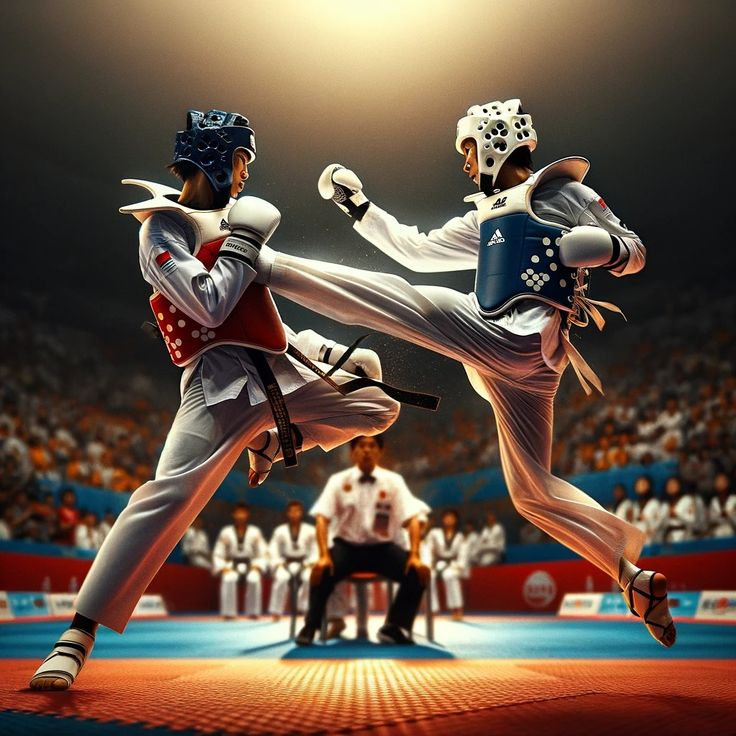

Sejarah Taekwondo Indonesia
GET TO KNOW WHAT TAEKWONDO INDONESIA IS!
Taekwondo Merupakan salah seni beladiri yang berasal dari korea selatan,Pada Tahun 1945 di saat Korea merdeka, rakyat Korea berusaha mengembangkan Taekwondo sehingga diterima dan berkembang pesat diseluruh dunia. WTF adalah salah satu badan Federasi Taekwondo resmi yang berdiri pada 28 Mei 1973, yang merupakan program resmi pertahanan nasional kalangan polisi dan juga tentara. Taekwondo berkembang di Indonesia pada tahun 1975 yang membawa aliran ini adalah Mauritsz Dominggus yang datang ke Indonesia pada tahun 1975 di tanjung priok, Jakarta Utara. Seiring dengan berkembangnya Taekwondo di Indonesia, terdapat 2 organisasi Taekwondo yaitu FTI(Federasi Taekwondo Indonesia) dan juga PTI(Persatuan Taekwondo Indonesia). FTI dan PTI menggelar sebuah pertemuan pada tanggal 28 Maret 1981 yang bertajuk MUSYARAH NASIONAL I, dengan tujuan untuk memajukan Taekwondo Indonesia. misalkan berdirinya tempat-tempat latihan Taekwondo di berbagai sekolah-sekolah, di SD (Sekolah Dasar), SMP (Sekolah Menengah Pertama), SMA (Sekolah Menengah atas), perguruan tinggi, hingga di instansi-instansi pemerintahan dan juga di
tempat umum lainnya.Banyak atlet-atlet dari Indonesia yang berprestasi di bidang beladiri Taekwondo.Olahraga beladiri taekwondo berhasil mencuri perhatian masyarakat Jakarta karena olahraga beladiri ini memiliki banyak kelebihan dan keunikan. Olahraga beladiri taekwondo memiliki gerakan yang indah dan praktis digunakan seperti tendangan-tendangan berputar dengan sasaran kepala. Meskipun gerakan-gerakan taekwondo bisa mematikan lawan, dalam pertandingan taekwondo berbagai alat pelindung untuk menghindari hal-hal yang membahayakan, seperti pelindung di area kepala, area body sampai area bagian bagian vital lainnya. Untuk itu olahraga beladiri taekwondo bisa diikuti oleh semua kalangan dari anak kecil usia dini sampai orang tua yang lanjut usia.
Reason why you should get a Taekwondo?

- Perkembangan taekwondo dari masa ke masa tidak pernah mati.
- Taekwondo sudah melekat dikehidupan manusia terutama “MASYARAKAT"
- Menjadi ritual atau kebutuhan sekunder bagi sebagian orang.
Advantages of TAEKWONDO INDONESIA!
- Meningkatkan Fokus dan Konsentrasi
- Percaya Diri
- Mengatasi Stress
- Jiwa Kepemimpinan
- Melatih Kesabaran